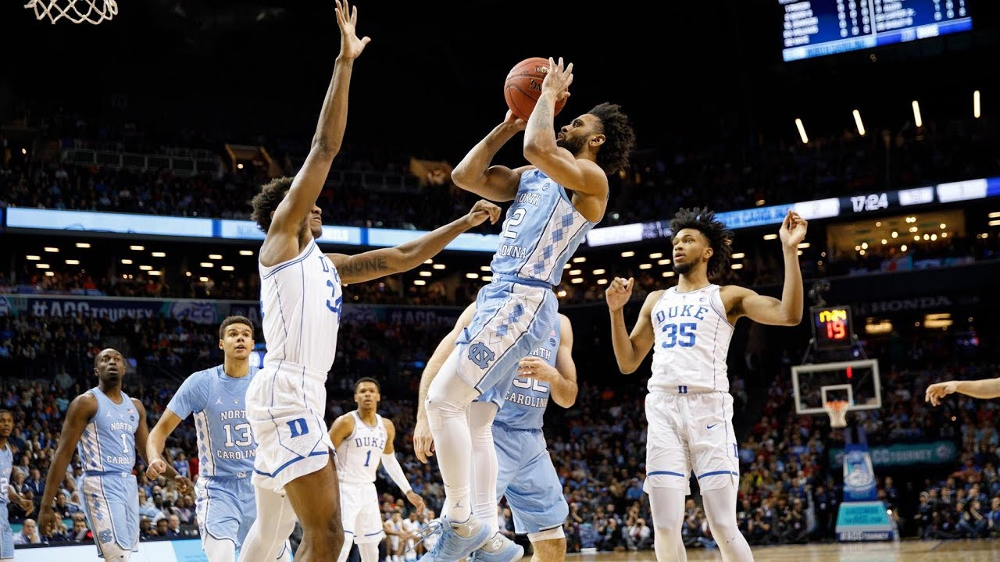
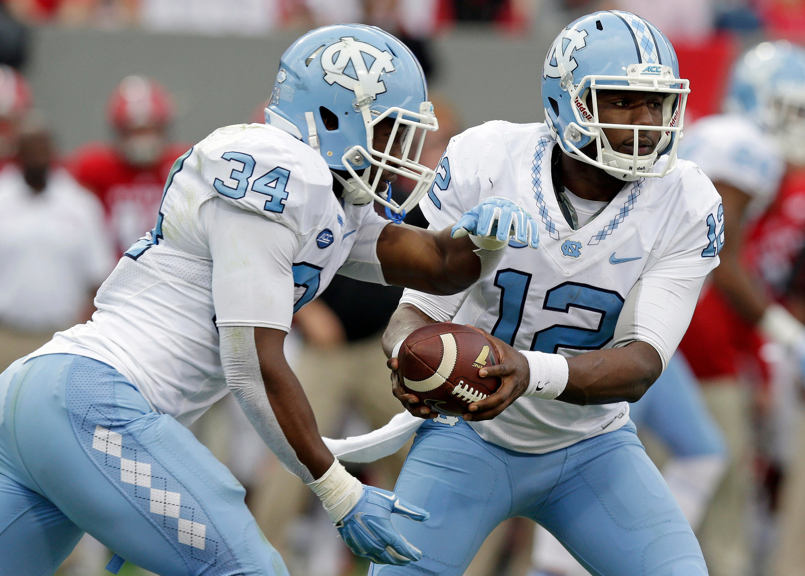
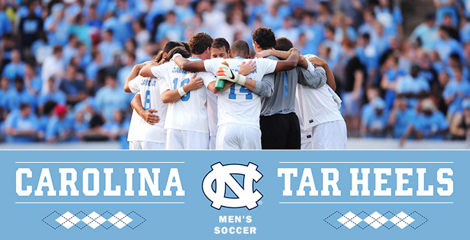
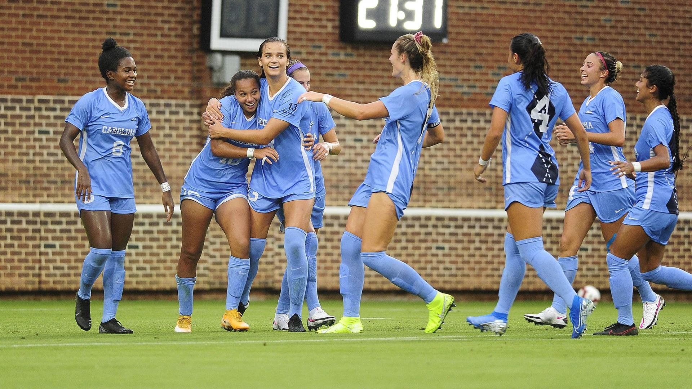
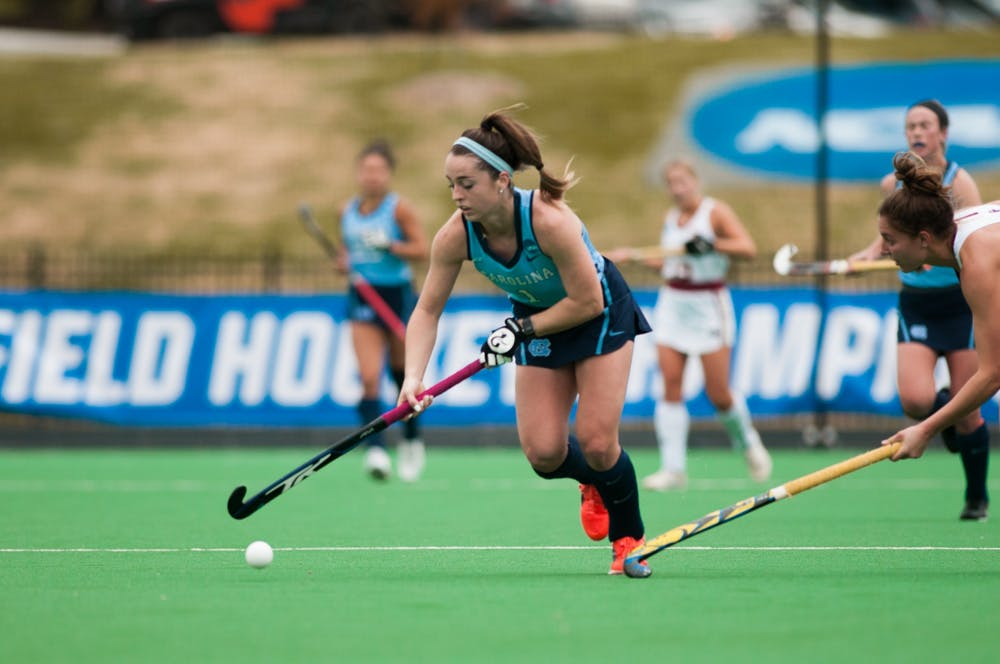

The North Carolina Tar Heels Men's basketball program has won six NCAA Tournament Championships as well as 18 ACC tournament titles. The only schools that have more NCAA Tournament Championships are UCLA and Kentucky. With the recent retiring of Roy Williams, Hubert Davis has become the new basketball head coach.

The North Carolina Tar Heels Men’s football team plays in the Coastal Division of the Atlantic Coast Conference and the Football Bowl Subdivision of the National Collegiate Athletic Association. Led by head coach Mack Brown, the football team enjoyed a successful 2020 ACC season with an overall record of 8-4 and an appearance in the Orange Bowl.

The North Carolina Tar Heels men's soccer team plays in the ACC of the NCAA Division 1 conference. They have won 2 NCAA national championships in the years 2001 and 2011. Their current head coach, Carlos Somoano, has been a part of the program for nearly 20 years while being a head coach for 10 of those years.

The North Carolina Tar Heels women's soccer team is one of the most decorated and successful athletics teams at UNC Chapel Hill. Impressively, they have won 23 of the 27 ACC championships and 21 of the 38 NCAA national championships. Much of their success can be attributed to their head coach, Anson Dorrance, who has been with the team for over 43 years.

The North Carolina Tar Heels women’s field hockey team is another heavily successful sports team at UNC Chapel Hill. They have won a total of 24 ACC championships and 8 NCAA national championships. Impressively, they have won 5 out of the 6 past ACC tournaments and reached the final of 4 out of the 5 past NCAA tournaments.
